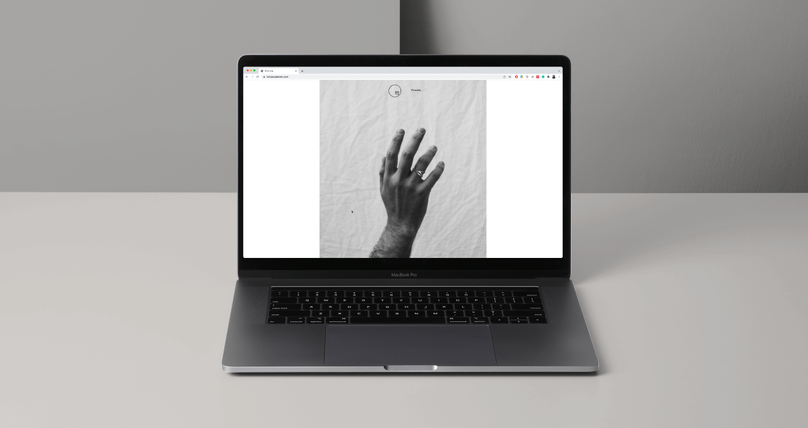
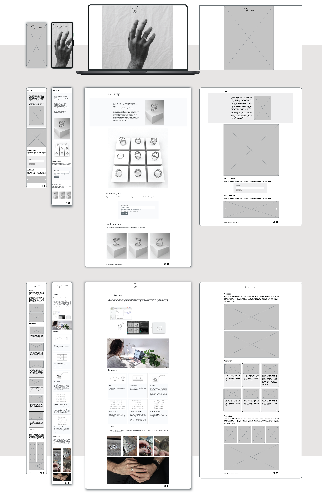

'XYU' web design
WHEN? Spring 2020, redesign in Fall 2021
WHO? Tomas Cabezon Pedroso
WHY? Mobile Web Design and Development course
WHERE? CMU

During this course we were asked to develop a website using Bootstrap. I thought that this was a great solution to redesign the website I built in 2019 for the 'XYU ring'. The wireframes of this redesign as well as screenshots of the final website are the following:
